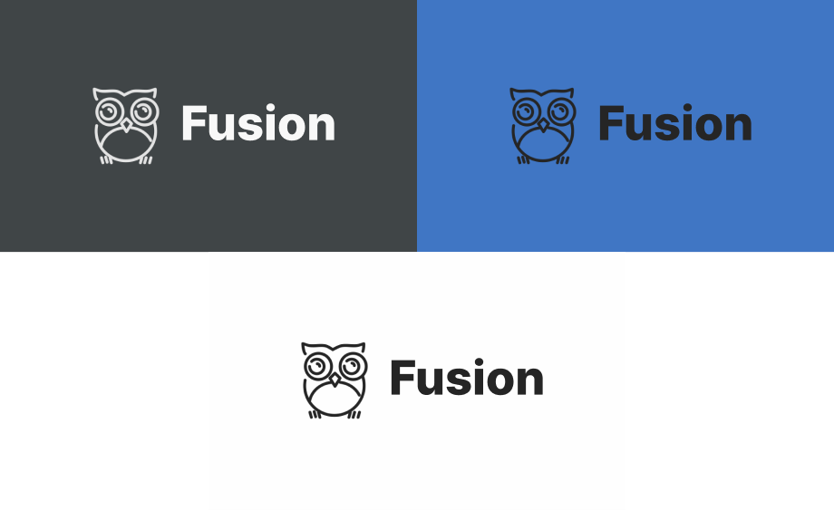
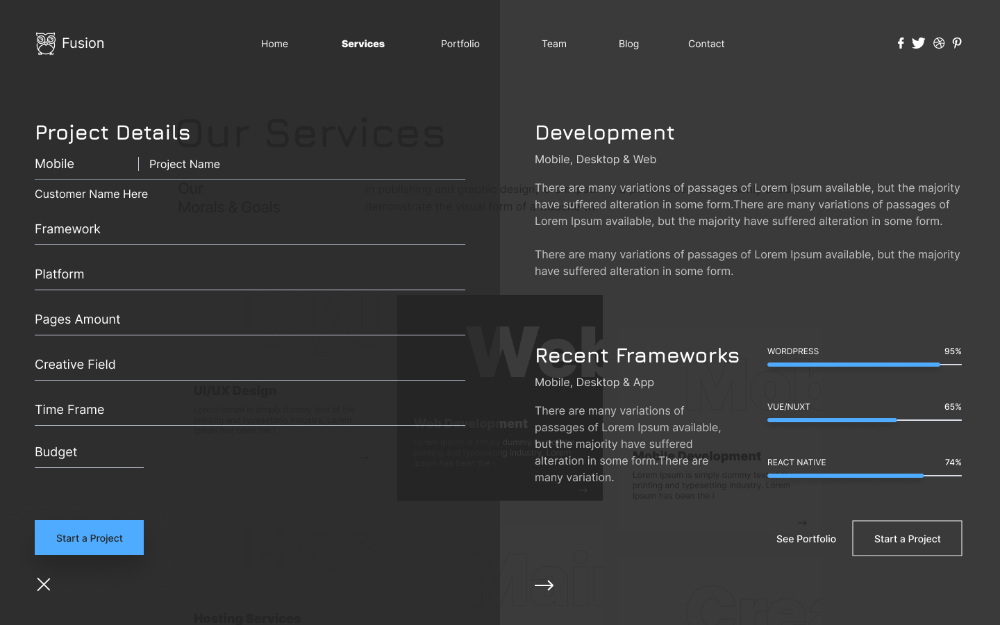

Fusion Template
UI/UX Development
Fusion is a practice template that I made using Figma in my spare time, to keep on point with the modern design trends. It's designed from different existing models that inspired me. It's only for practice purposes.

Design Language
The Fusion template is based on simplistic complexity, the goal was to create something that is super clean and minimal, but with advanced animations and slick transitions.
Inspiration
This design is inspired by several relative templates that I found on dribbble and pinterest, they really took my attention and I felt compelled to make something relative myself. I wanted to make something really clean but at the same time futuristic with a wide range of animation possibilities.
Pourpose
Flex is a website design template made for any small or large web development agency. What I had in mind when going through the design development was to create something that isn't widely seen on the market. The underline for this project was "Being Different".
Components
The project has a creative set of components, the design revolves around simplistic and aesthetic animation. Tiles with moving texts, pop-up pages, and creative sliders.
Tile Boxes
The box tiles across all pages have a simple and minimalistic H1 text on the upper banner, which slides across from one border to the other and changes colors on hover. The effect and animation are really simple but create a super aesthetic feel.
Sliding Pages
The sliding pages are something I came up with last-minute, it's a really unique approach to a flat design which adds a futuristic element.
I even pushed it a bit furder by adding a double sliding page on the services picker. It's not something that you see everyday and yes, some people will probably hate it, because it's way too complex, but I really wanted to test this out for quite the time, several projects back. So I finally found out how to apply it.
The second sliding page is a request page, which you can fill out some project details and get feedback from the team, it can be seen on the image slider at the beginning of the showcase,
The sliding pages are probably the second hardest feature to animate and incorporate into the design, code-wise that is.
Color Pallette
The color combination I selected is super grayscale. With some light blues for contrast in specific areas where the focus is needed.
The combination of main colors I chose was white and gray, with some offsets to both colors. Adding more colors to the overall design would be too much and would ruin the design feel.
There's also the possibility to add a dark mode, given the combo.
Typography
Inter features a tall x-height to aid in readability of mixed-case and lower-case text. Several OpenType features are provided as well, like contextual alternates that adjusts punctuation depending on the shape of surrounding glyphs, slashed zero for when you need to disambiguate “0” from “o”, tabular numbers, etc.

Branding
There is nothing special about the fusion logo, it's actually quite generic, I just needed something clean and comfortable to use for the template, it is not designed to stand out so much or attract attention, it's not going to go to any market in general. Although, I can't say that it does look quite neat.
Final Thoughts
Fusion was a fun project to work on, it really helped me practice fusing simplicity and complexity in one package. Sadly it's made only for practice pourposes and won't be used for any active projects. I though it turned out really well, so I included it on my portfolio.
-
Read more
Without resorting to reality, one can, given infinite time and resources, produce all conceivable theories. One of these theories is bound to be the “truth”. To decide among them, scientists conduct experiments and compare their results to predictions yielded by the theories. A theory is falsified when one or more of its predictions fails. No amount of positive results – i.e., outcomes that confirm the theory’s predictions – can “prove right” a theory. Theories can only be proven false by that great arbiter, reality.
-
DeliverablesAgency
- Webdesigner Trends
- The FWA
- Abduzeedo
- Smashing Magazine
- AWWWARDS
Production company- The Webbber
- Computer Arts
- siteInspire
- httpster.net
- It's nice that
VFX & Design- Book of Design
- Illustrator's Home
- Designer's magazine